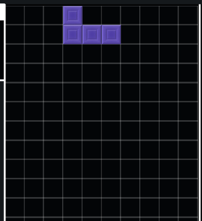
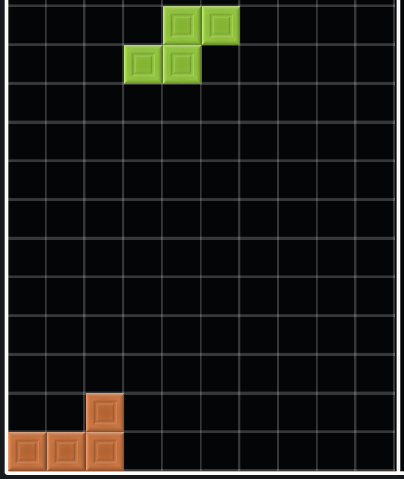
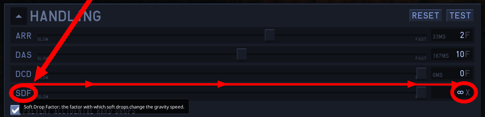

TETRA LEAGUE is TETR.IO's premier matchmaking system featured for free for all registered accounts above level 10. While gameplay is very straightforward, which is just 1v1ing against another player of similar skill, the exact mechanics behind what the various mechanical values are and how the system itself works are often pondered.
Rating Deviation is an extension of Glicko-2, which is TETRA LEAGUE's underlying rating system. Glicko is used in many games and organizations, and was originally created for chess.
RD is the number after the ± symbol in your Glicko rating value. "RD" stands for Rating Deviation. It is a measurement of "How uncertain the Glicko-2 system is of your rating. Lower is better." (according to ingame hover text)
RD generally goes down after playing a match. It is possible to gain RD after a match, however. RD limits itself to a value of "60", according to osk, however, some players have even attained 58 RD. The upper limit of RD is 349, after which, RD will be unable to decay any further.
RD accumulates at a static rate of "1 RD per day, after a week of inactivity." You can tell whether or not your RD is currently "decaying" by navigating to your TETRA CHANNEL Userpage, found at https://ch.tetr.io/u/your-username-here and viewing the Glicko number, looking for an arrow which points in this direction: Ƿ
Interested in seeing the TETR.IO rank requirements? You can retrieve that projected information from a couple different sites and Discord bots, however, do note that rank cutoffs are volatile, and that most services can only update at a rate of once per every hour, so they do not host up-to-date or official information!
Here's a small list of places that generate rank cutoffs:
Ðimentio#0001's Hiyajo Maho#2356(Computes average statistics, caches results for 1 hour. Invite Hiyajo Maho from this URL.)
Send >tetoranks in an appropriate channel. You can specify the specific rank you'd like to see with >tetoranks <x>. (where <x> is your desired rank's letter)
For some up-to-date official information, feel free to visit your TETRA CHANNEL userpage found at https://ch.tetr.io/u/your-username-here and inspect the TETRA LEAGUE section. While only vaguely stated, and only shown if ranked, a "progress bar" will be shown below your stats, indicating your global placement, the placement required to reach the next rank, and the placement required to keep your current rank.
Handling
Tip: you may always test your current handling settings from the TEST button in the top right of the HANDLING section!
Handling controls how your pieces interact with your sustained input to any of the movement keys. They have a dedicated section in the titular HANDLING section of the ingame CONFIG. Below are some short descriptions of these values.
A commonly suggested workaround if changing between the two games is really simple, just do some quick addition:
TETR.IO ARR = Jstris ARR → TETR.IO DAS = Jstris DAS + Jstris ARR
Auto Repeat Ratearr
[A]uto [R]epeat [R]ate(lower is faster: 0 is instantaneous): This slider controls how quickly pieces move around while holding the left or right movement keys. It's well known that an "optimal" ARR is 0: when ARR is this value, pieces teleport instantly upon DAS charge, allowing for extremely fast play. Good finesse is a must-have if using this handling, however!
Delayed Auto Shiftdas
[D]elayed [A]uto [S]hift(lower is faster): This slider controls how long you hold the left or right movement keys before engaging ARR. To put it simply:
DAS is how long you hold L/R before the piece goes brrrr.
ARR is how quickly the piece goes brrrr.
Optimal DAS values largely differ from player to player, so experiment around with different ones!
DAS Cut Delaydcd
[D]AS [C]ut [D]elay(higher is slower: 0 disables the system): An experimental and complicated handling setting, DAS Cut Delay hasn't seen much use in professional play. DAS Cut Delay introduces a set of pauses to active DAS, every time one of the two following actions occur:


Whenever a piece is rotated.
Whenever a piece is spawned.
If either of these actions occur, DAS is "paused", or "cut" for the amount of frames DCD is configured to. It primarily targets 0ARR play, and aims to make certain finesse moves possible while keeping DAS charged, as well as reducing possible misdrops.
➔ A common value for it would be around 1 or 2 frames.
[S]oft [D]rop [F]actor(higher is faster: ∞ is instantaneous): This slider controlshow quickly your piece will soft drop, given you are holding the soft drop key. It doesn't necessarily multiply current gravity, as you can still soft drop in zero gravity. (0 times anything, even infinity, equals 0)
An optimal value for this would be ∞, as stacks that require partial soft drops to tuck pieces in is just not a good stack. If this functionality is a dealbreaker for you, limiting yourself to 20X or lower, then you have bigger issues to worry about.
Sonic Dropsonicdrop
To execute a "hard drop without placing the piece", such as those extremely fast T-Spins, turn this slider in the CONFIG to ∞! Then, use your soft drop key as normal: the piece will rocket down to the bottom instantly now!

Super Rotation System
"SRS", or, as this anagram expands to, "[S]uper [R]otation [S]ystem", is the driving force behind how the game handles rotations that intersect the stack. This system has some seemingly inconsistent and unconventional behaviors, especially for certain tucks, so here's some illustrations on such spins.
Z and S tucks can be confusing to new players, since they rely on impulsively developed rotation systems which carry somewhat unconventional definitions of symmetry; this system, known as SRS, is likely why you're failing to execute successful Z or S spins.
To execute a wall-less Z spin, starting from the spawn position, press the counter clockwise rotation key, then soft drop and press the counter clockwise rotation key once more. If there are any walls spanning across both sides, as shown in the second half of this gif, simply reverse the rotations and press the neutral clockwise rotation key twice, instead.
Tip: here's an easy way to remember this, assuming you have the default guideline controls: press the "z" key twice to z spin.
To execute a wall-less S spin, starting from the spawn position, press the clockwise rotation key, soft drop, and press the clockwise rotation key once again. (Many new players default to only rotating clockwise, as the only feasible key to rotate is the up arrow key, next to all other movement keys. This is why S spins may appear "easier" to a new user.)
Assuming two walls exists, such as the one shown in the second half of this gif, simply reverse the rotations and press the opposite counter clockwise rotation key twice, instead.
/set Command Usage
The ingame /set command has plenty of valid use case scenarios, but at the end of the day, it still is what you make out of it. That said, here's a bunch of reference to make the most out of this command, without straining your hands typing a preset out manually!
Automatic Solutionssetgen
TETR.IO itself contains several presets available for custom room hosts. Simply click the very first option in the GAME tab to access up to 6 presets. Unfortunately, you can't create your own presets quite yet, but the ability to do so in the future is a planned feature.
First, we'll go over automated solutions, from least intrusive to most:
craftxbox's Continued Autohost project includes several commands for room presets. Please refer to this ingame bot's documentation to get started. Once you have your room configured the way you like, use the command !savepreset <name> to save it as a preset. You can then load the settings in the future with !preset <name>, or delete them with !delpreset <name>. There are a handful of built-in presets that you can view by simply running !preset.
Zutatensuppe's custom JavaScript bookmarklet: a quick how-to guide is included both here and here, alongside source code for the bookmarklet itself.
aznguy.mp4's console solution: paste this Github Gist into your browser's devtools, accessible by using F12 in most scenarios(including TETR.IO desktop), to dump your current room's properties into the console. This is a bit of a blunt solution, and it will include lots of extra definitions that would otherwise be assumed(as default settings), so only use this as an inbetween while creating /set presets from scratch!
Manual referencemanualset
Here's some pointers if you'd like to avoid the automated solutions and instead create your own:
aznguy.mp4's list of /set attributes: as pinned in #tetrio on the official TETR.IO Discord server, it's also available on Tenchi's FAQ.
ZaptorZap's .txt file of complete /set presets: it's always nice to learn by example, so here's a five for one deal! Download it here (if you have suggestions for new presets, feel free to direct message ZaptorZap#0405 about them!)
As well as these resources, here's some more specific advice: note that /set presets are bound by TETR.IO's 512 character chat limit. If a /set preset calls for more than this limit, either split it up into two halves or try to truncate defaults settings out.
In general
Here are some otherwise hard to categorize mechanics. They're often misunderstood or not understood at all.
Firefire
The "fire bar" effect triggers when you build up enough "fire points" to cause it. You can accumulate fire points by clearing a large spike, keeping a large back to back chain up, or, by koing people (koing people is the most effective way to build fire points.). You also steal fire points from the people you've ko'd; you can see how filled your ko'd user's fire bar was by looking at the little percentage sign next to their name. This whole system is entirely cosmetic, and can be disabled from the settings.
Character Systemcharacters
First revealed in mid-November 2020 and developed since, the prototyped "Character System" is planned to be TETR.IO's "Beta" feature.
For Character System conversation, please check out the #Official Character System Thread in the TETR.IO Discord server. It forks off from #lobby.
If you're still skeptical to the validity of these pages, here's documentation by osk himself. Please note that this documentation is wildly out of date!
Badgessecretgrade
Badges are simple graphics placed on a specific and registered user's userpage or player card signifying that user's achievements. If you're looking for your first badge, go for the "Secret Grade" badge! You can attain this badge with the solo custom game mode, with gravity disabled. If you take your time, you'll likely get it first try!
 Rating Deviation is an extension of Glicko-2, which is TETRA LEAGUE's underlying rating system. Glicko is used in many games and organizations, and was originally created for chess.
Rating Deviation is an extension of Glicko-2, which is TETRA LEAGUE's underlying rating system. Glicko is used in many games and organizations, and was originally created for chess.{kind=link}